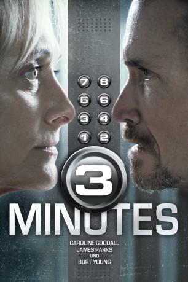

gesehen am 13.08.2019
gesehen am 13.08.2019Alternativ: The Elevator: Three Minutes Can Change Your Life (Englischer Titel) gesehen am 13.08.2019
 
 IMDB-Wertung: 4.6 / 10
IMDB-Wertung: 4.6 / 10  Metascore:
Metascore: 
Jack Tramell ist ein äußerst erfolgreicher Moderator einer Quizshow. Als er eines Tages nach einem langen Arbeitstag nach Hause kommt, nimmt im Fahrstuhl zu seiner Wohnung ein wahrer Horrortrip seinen Lauf. Er wird von einer offenbar verrückten Frau überfallen, die ihn gefesselt im Aufzug zurücklässt. Langsam wird ihm bewusst, dass er sich nun mitten in einem perfiden Spiel befindet, das genau auf den Regeln gründet, die ihm nur allzu vertraut aus der von ihm moderierten Quizshow "3 Minutes" sind. Die Frau, die sich Kathryn nennt, verfolgt ihr Vorhaben zielstrebig und gnadenlos. Doch ist sie wirklich so wahnsinnig, wie sie zu sein scheint? Und Jack so unschuldig, wie er angesichts der drohenden Gefahr immerzu beteuert? Welche Abgründe lauern in ihm?
Jahr: 2015
Dauer: 92 Minuten
FSK: 16
Land: Italien Studio: OFDb FilmworksTonspuren:
Untertitel:
Auflösung: SD (720x304) Größe: 1433 MB
Regisseur: Massimo Coglitore
Drehbuch: Mauro Graiani, Riccardo Irrera, Daniela Merlo
Soundtrack: Stefano Caprioli
Darsteller:
 Caroline Goodall als Katherine
Caroline Goodall als Katherine Burt Young als George
Burt Young als George James Parks als Jack
James Parks als Jack Niccolò Senni als Irving
Niccolò Senni als IrvingDatei: X:\NEU\3 Minutes (2015, FSK16, 720x304).avi seit 13.08.2019
 Es gibt insgesamt 187 Filme in der Gruppe 'NEU'
Es gibt insgesamt 187 Filme in der Gruppe 'NEU'